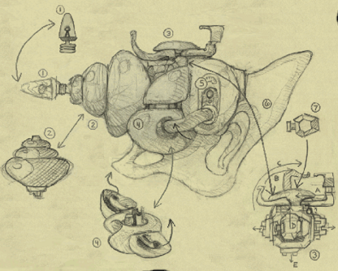
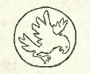
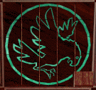
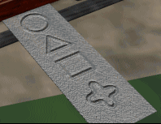
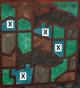
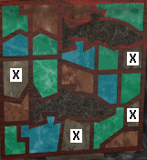

How to read this
Each part is a run of scenes, one for each place, with the steps in order. Part 1 and Part 5 are on this side. The rest are on the other side.
Tick a step when you have done it. The page keeps your ticks in this browser.
A bar down the left edge marks the first step you have not ticked, once you have ticked something. The Resume button jumps there.
The bar above the parts has one block per part, all the same width. A block fills with red stripes as you tick that part’s steps.
This step or box is not in your draft. I filled it in from another source.
A note about a doubt, a trap or a clash between sources. You do not tick it.
Notes add detail to the step above. You do not tick them.
Bold words in a step are things you pick up or use, or people you talk to.
Moves from your draft. F is forward, T turn around, L left, R right, LF left-forward, RF right-forward. Each run is also written out for screen readers.
Keycaps are arrow keys on the keyboard. The drawbridge hook is the one place they are used.
A way or a recipe: a longer method, or a choice between two. Do the step above it in whichever way you like. You do not tick the lines.
A boxed picture explains the step or scene near it. The words are always in the step as well.
The dot on the trail beside a scene heading fills in when every step in that scene is ticked.
Before you start
- Click the mouse once to skip the game introduction.
- Make extra save folders ahead of time. The game offers few save slots and always starts in its installation folder. On Windows you can also minimize the game and make a folder while you play.
- Expect a lot of clicking, pixel searching and backtracking. The cursors are large and often cover what you are looking for.
- The game has parallel paths and several endings, but nearly every puzzle still has to be solved to finish it.
- If you play from discs, the game asks you to swap discs after the first portal trip.
- GOG sells the game for Windows and says on its store page that it is powered by ScummVM. I did not run it.
The cannon you are building
The goal of the game is a vacuum cannon in seven pieces. Each piece is picked up by a step in the walkthrough. Tick it there and it fills in here.

- 1GunlightMartin’s study in the Roost, in the desk cavity with the lamp (scene 2.4)Not yet
- 2ShellThe volcano, from the bottom of the sphere in the valve room (scene 6.5)Not yet
- 3Weight scaleThe safe in the shipwreck, under the water (scene 3.2)Not yet
- 4Ball with wingsThe statue’s compartment in the Fortress (scene 3.6)Not yet
- 5Wide armsThe Temple basement, the three-armed item. Your notes also call it the tentacles (scene 4.3)Not yet
- 6HandleThe volcano, the wood piece in the vise after you dig the hole (scene 6.8)Not yet
- 7AmmoThe lighthouse study, the bottle from the puzzle box (scene 5.1)Not yet
You have 0 of 7 pieces.
- A filled number means you have ticked the step that picks the piece up. It reads “Have it”.
- An empty number reads “Not yet”. The scene link goes to the step.
Putting it together in the volcano
- Join 1 and 2Then join 3 to them.
- Add 4 and 5Open the wings on 4 and the arms on 5 first.
- Add 6Then close the wings on 4 and the arms on 5.
- Open the two metal parts on 3They sit at the top of piece 3.
- Put 7 inside 3Open the top of piece 3 first.
- Close and lockClose the top and lock both metal parts. The cannon activates.
The diagram is your picture. Pieces 4, 5 and 7 are named in your assembly steps. I matched 1, 2, 3 and 6 by where you find them, as explained under “What I could not confirm”.
Places and things
Pictures and tables you may want open while you play. The steps link to them.
- Hall
- The lab door code goes on the lock at the end of the hall.
- Kitchen
- The baby bottle is in the refrigerator. The papers are on the counter.
- Living room
- The compass is on the bookshelf.
- Nursery
- The toy soldier, Dr. Krick’s notes and the alarm clock. The portal opens here.
- Study
- The golden sparrow and the shells. The safe behind the books, the letter opener and the puzzle box.
- Lab
- The hexagonal device, the silver box, the workbench, the white oval device and the stairs to the lens.
- Shed
- The crowbar and the electrical panel. It is outside the house, on the study side.
- A door.
- A wall.
Not to scale. North is not marked on your map, and your map does not label the hall. I added that label.
| Portal | From | To | Good to know |
|---|---|---|---|
| The nursery portal | The nursery | The beach near the Roost | The short way across. It closes if you wait too long. |
| The lab portal | The lab | The beach near the Roost | The way you start the game and the way you return in scene 5.2. It needs the lens, the console and a bulb. |
| The Temple porthole | The Temple dome | The lighthouse study, or wherever the submarine is | One way. You can use it as often as you like. The portal to the lighthouse stays open for four minutes. If the submarine is in the volcano, the train is reset. |
| The Dark Being's porthole | The volcano laboratory | Home | You open it by pulling the large lever in front of the yellow machine. It is the last thing you go through. |
Items by place and what they are for (56 rows)
Your lists of items by place, with the use of each one gathered from the steps.
| Item | Where | What it is for |
|---|---|---|
| The cottage | ||
| Lighter | Box on the desk | Lights the oven, the cannon fuse and the dynamite. |
| Car keys | Drawer in the table under the window | The introduction. |
| Umbrella | Hatstand by the door | The volcano: the gates, the walkway and the conveyor belt gate. |
| Bag | Hatstand by the door | The draft does not say. |
| Outside the lighthouse | ||
| Letter | Mailbox | Read with the letter opener. It gives the safe’s combination. |
| Silver key | Light fixture by the front step | Opens the shed. |
| Crowbar | The shed | Opens the silver box in the lab and the padlock on the lens hatch. |
| Front door key | Under the objects on the front step | Opens the front door. |
| Inside the lighthouse | ||
| Baby bottle | Refrigerator | The draft does not say. |
| Compass | Living room bookshelf | Reading directions at the main intersection in the volcano. |
| Toy soldier | Nursery floor | Its wind-up key goes on the golden sparrow. |
| Dr. Krick’s notes | Nursery nightstand and the study desk | The bird diagram for the sliding puzzle. |
| Alarm clock | Nursery table | The time bomb. |
| Golden sparrow | Study bookshelf | Scares the Roost’s birds, with the toy soldier’s key and the pendulum clock. |
| Almond shells and seashells | Study bookshelf | Given to Lyril. Your notes say they are not used. |
| Letter opener | Study desk, right drawer | Opens the letter. |
| Portfolio | The safe | Page 59 gives the lab door code. |
| Five-toothed key | Puzzle box, face 1 drawer | The lock behind the upper fish. |
| Red teardrop pieces | Puzzle box, shelf behind the plate | The last stage of the puzzle box. Your notes call them red earrings. |
| Green power modulation tube | Silver box in the lab | Goes in the lighthouse lens. |
| Soldering iron, vacuum tube, wire | Lab workbench | Repair the white oval device. |
| Bulbs | White box in the lab | The green bulb and the last bulb in the lens. |
| The Roost | ||
| Stones | The beach, two at a time | Scare the birds. Stun the Birdman. |
| Note | Bottle by the dock | The wreck’s position. Shown to Lyril. |
| Green rod | The dock’s lower platform | Lowers the drawbridge. |
| Gold key | Secret compartment in Martin’s desk | Locks the green window gate against the Birdman. |
| Purple key | Third folder in the large square drawer | Opens the hatch at the upper right. |
| Throttle crank | Wide drawer in Martin’s desk | Goes in the submarine’s throttle socket. |
| Whistling device | Hatch in Martin’s desk | The draft does not say. |
| Gunlight | Desk cavity with the lamp | Cannon piece 1. |
| Spring | Upper left drawer in the desk | Repairs the radio control device. |
| Medallion | The skeleton | The puzzle box’s last stage. |
| Four-pronged tool | The Birdman’s workshop table | Opens the radio control device. |
| Nuts and bolts | The Birdman’s workshop table | Given to Lyril. |
| Radio control device | The Birdman’s workshop, small table | Its ladder feature takes you up to the bat hangar. |
| Gears, small handle, crank | The bat hangar | Release and wind the bat. |
| The shipwreck and the Fortress | ||
| Hook | Back of the ship’s hold | Used on the safe’s hole. |
| Weight scale | The safe | Cannon piece 3. |
| Fish | The dock’s fishing rod | Lures the monster to the tower. |
| Wood | The two table saws | Builds the bridge. |
| Cannon ball, gunpowder, fuse | The metal shop’s cannon | Deal with the monster. |
| Metal piece | The mold, after pouring | Repairs the airplane. |
| Key | The airplane’s work table | Opens the statue’s compartment. |
| Ball with wings | The statue’s compartment | Cannon piece 4. |
| The Temple | ||
| Disk | The pod creature | Played in the blue circle at the far left. |
| Circuit board | Box in the basement | The time bomb. |
| Tentacles (wide arms) | Square box in the basement | Cannon piece 5. |
| Three power components | Wooden crates in the basement | A spare part for the porthole generator. |
| Cannon drawing | Basement wall | The assembly diagram. |
| The volcano | ||
| Cutters and dynamite | The train’s storage compartment | Cut the fence. Clear the rocks. The time bomb. |
| Rod and wrench | The box in the tunnel, and the train | Power the switcher boxes. |
| Pullers | The train’s storage compartment | Take out and replace track. |
| Shell | Bottom of the sphere | Cannon piece 2. |
| Handle | The vise | Cannon piece 6. |
| Hammer | The train’s storage compartment | Opens the chest with the blueprints. |
| Blueprints | The chest in the laboratory | Given to Dr. Krick. |
Codes and numbers in one place (spoilers)
| What | Value | Where it comes from |
|---|---|---|
| Safe combination | 5-18-28 | The letter from the mailbox, in the study. |
| Lab door code | 82496 | The date 8-24-96 on page 59 of the portfolio. |
| Shipwreck position | 20.67 north, 118.96 west | The submarine’s map tubes. The note in the bottle mentions the wreck. |
| Volcano position | 22.01 north, 119.11 west | The Temple basement’s control unit. |
| Drawbridge hook | Left, down, down, left, left, left, down, right, down, right, down, left, up | Arrow keys at the joystick. |
| Stones for the birds | 3 per bird, 9 in all | You carry two at a time. |
| Bat crank | 13 turns clockwise | In the bat’s cockpit. |
| Metal strip order | Circle, triangle, square, cross | Slides out of the puzzle box. Used in the finale. |
| Valve sphere | Arrows 1, 2, 4 and 6 horizontal | Turn them back vertical on the way up. |
| Forge | At least 30 seconds in the fire | Before you pour the metal. |
| Teleporter slider | Stop on the red line | If you pass it, the unit blows. |
| Dr. Krick's panel | Right-hand lever down 3 times | Wakes him. |
The route
The game has two sides. You start on this one, cross at the lab, and come home only once before the end.
- This side
- Cottage
- Lighthouse
- The other side
- Roost beach
- Roost tower
- Submarine
- Shipwreck
- Fortress
- Temple
- Volcano
- A place. Places run in order from left to right.
- Where you begin, in the cottage.
- The last place, the volcano.
- Your travel, from one place to the next.
The same route as a list
- Part 1
- Cottage
- Lighthouse
- Part 2
- Roost beach
- Roost tower
- Part 3
- Submarine
- Shipwreck
- Fortress
- Part 4
- Temple
- Part 5
- Lighthouse
- Part 6
- Submarine
- Volcano
The flight to the Temple, by bat plane or glider, is not drawn as a separate leg. Part 4 starts at the Temple.
Part 1:This sideAt the lighthouse
Explore the cottage and the lighthouse, open the safe, work on the puzzle box and start up the lab.
- Scenes
- 8
- Steps
- 72
At the end: You step through the lab portal and arrive on a beach near the Roost.
1.1The cottage
You light dynamite, a cannon fuse and an oven with it later.
The umbrella matters in the volcano. The draft never says what the bag is for.
Heads upDo not turn around and try to get into the car. The game offers to quit if you do.
1.2Outside the lighthouse
The large switch will not go on yet. Scene 1.8 sends you back to this panel for the right-hand switch.
1.3The kitchen and living room
The draft does not say what the bottle is for.
You use the compass in the volcano, where the draft finds its way by compass readings.
1.4The nursery
After a few minutes you hear a whistling, mechanical sound and the baby starts to cry.
You can pull the wind-up key off the toy soldier later. The clock goes into the time bomb.
Heads upThe portal in this room closes if you wait too long, so take all three things first.
The short way across
- Take the toy soldier, the notes and the clock.
- Go through the portal, turn around and let the Dark Being strike you.
- Change discs when the game asks. You wake on the beach near the Roost.
- Carry on in Part 2.
Heads upThe short way skips the study, the safe and the lab. The draft uses the lab portal later, in scene 5.2, so I think you have to come back and do scenes 1.5 to 1.8 anyway. I could not confirm this.
1.5The study and the safe
- Clockwisea full turn to 0
- Clockwiseto 5
- Counterclockwiseto 18
- Counterclockwiseto 18 again
- Clockwiseto 28
The 18 appears twice because that is how your draft has it. Walkthrough King gives only the three numbers.
The sparrow can scare off the Roost’s mechanical birds (scene 2.3).
Your notes say the shells are not used. In the Temple, though, the draft has you give shells to Lyril.
The view zooms out by itself when the safe opens.
Something else is in the safe, but you cannot reach it.
1.6The puzzle box: wooden pieces and the key
- 1 to 8The single squares. Press them in number order.
- 9 and 10The two dominoes, one lying down and one standing.
- 11 and 12The two L-shaped pieces.
- BThe hidden red button shows here once the pieces are done. Press it to open face 1.
- A single square: press it.
- A domino or an L: your draft says click, another walkthrough says slide.
- No number: you do not touch it.
- Where the hidden red button appears.
Walkthrough King describes the same order: the eight small squares top to bottom and left to right, then two rectangular pieces, then two L-shaped ones.
Heads upYou can do the puzzle box now or later, but you cannot finish it yet. The last stage needs the medallion from the skeleton in the Roost (scene 2.4). That stage is scene 5.1.
Click the arrow cursor again to stop the box turning.
Your draft only says to click them in order. Walkthrough King says the last four slide. If a click does nothing, try dragging.
1.7The puzzle box: sliding puzzle and stained glass

The bird in the notesPage 118 of Dr. Krick's notes.

The bird on the boxThe picture the sliding puzzle should show when it is solved.

The metal stripCircle, triangle, square, cross, from top to bottom.

Blue sectionsPress the four marked X, then click the lower fish.

Gray sectionsPress the four marked X, then click the upper fish.
Between the two, press the red switch behind the lower fish.
Heads upThe puzzle is shuffled differently every game, so it has no fixed solution. The draft suggests a solver program if you know the final picture.
Heads upWalkthrough King says you can skip this puzzle by leaving the box and coming back to it five times. I did not test that.
AddedIf you solve it by hand
- Fix the top row first, one piece at a time from the left. Then fix the next row. Never touch a finished row again.
- For the last piece in a row, park it directly below its slot first, then bring the blank up beside it and slide it in.
- When two rows are left, solve them one column at a time, left to right, instead of one row at a time.
- The last few pieces cycle in the bottom right corner until they fall into place.
The plate needs the medallion from the Roost. If you already have it, go straight to scene 5.1. If not, come back after the Temple.
1.8The lab
Heads upIf you play from discs, the game asks you to change discs here.
Part 2:The other sideThe Roost
Cross the beach, lower the drawbridge, search the tower and open the way to the submarine.
- Scenes
- 7
- Steps
- 58
At the end: The gangway is locked, the submarine is open, and you hold the throttle crank, the gunlight and the medallion.
2.1The beach
![A flow chart titled Roost Beach Map. Each box is a view, joined to the others by lines labeled with moves such as F, T, L, R, LF and RF. The views are: the dock, dark rounded rocks with 3 grass plants, sand out to the horizon with 11 grass plants, dozens of rocks in the sand where two can be picked up, a vertical line of 5 rocks with 10 grass plants, a passage through rocks, driftwood in the center foreground, driftwood in the right foreground, a dark rock wall in the right half of the screen, a path through rocks, a vertical line of 3 stones in the center, where an arrow from the portal arrives, and a curving sand path in the distance.](media/beach-map.gif)
On a narrow screen, drag the map sideways. Open the picture on its own.
The moves for the stone run are in scene 2.3 as written text. F is forward, T turn around, L left, R right, LF left-forward and RF right-forward.
You arrive on a beach beside a cone-shaped tower. This is the Roost.
The note mentions the shipwreck. The submarine shows the exact position later (scene 3.1).
Three birds circle the tower as you approach. Remember how many there are.
2.2The drawbridge
Heads upThree mechanical birds block the gate here. Scene 2.3 shows how to get past them.
2.3The three birds
Way 1: throw stones
- Each bird needs three stones, so nine in all. You can only pick up two at a time, and you already have two from the beach.
- From the gate, move turn around, forward, forward, forward, right-forward, right-forward, forward, left-forward, right-forward to the stones on the beach.
- Pick up two stones.
- Move right, forward, forward, forward, left-forward, forward, forward, forward, forward, forward, right-forward, forward, forward back to the gate.
- Throw the stones at a bird. Then move forward to wake the next bird.
- Repeat until all three birds are gone.
Way 2: the golden sparrow
- Pull the wind-up key off Amanda’s toy soldier.
- Put the key on the golden sparrow from the study.
- Fit the sparrow into the pendulum clock.
- Push the clock’s pendulum. This scares the birds away.
From the beach, the birds still circling the tower are the ones you have left.
Heads upThe draft does not say where the pendulum clock is.
2.4Martin’s study
DangerDo this straight away. If you do not, the Birdman steals what you need from the desk, including the throttle crank.
A picture in the drawer shows the crank being used in the submarine.
You need that spring to repair the radio in scene 2.6.
The medallion goes into the puzzle box in scene 5.1.
To the right of the bed, look up to see a ladder to a ceiling hatch. It leads to the bat hangar (scene 2.7).
2.5The submarine dock
Heads upDo not go into the room with the Birdman yet. He closes a gate to keep you out. Scene 2.6 shows how to get in.
Heads upThe timing is tight, and the gangway pulls back by itself if you miss. Keep the mouse button down and the mouse still while the gangway is still extending. It may take a couple of tries.
2.6The Birdman’s workshop
Heads upThe draft calls this the alternate way to leave the Roost. It is also where you find the nuts and bolts that Lyril asks for in the Temple, so I would do it anyway. You need two stones from the beach, the gold key and the spring.
2.7The bat plane
Heads upThis is one of two ways to reach the Temple. The other is the glider at the Fortress (scene 3.6). This page does the shipwreck and the Fortress before the Temple, so save the last step of this scene for later if you want to follow that order.
The ladder from the hangar leads up to the roosts of the mechanical birds. You do not need them if you kept the Birdman out by locking the windows.
Heads upYour notes say the bird handle will not unlock unless you turn the crank all 13 times.
Part 3:The other sideOut at sea
Take the submarine to the shipwreck, then to the Fortress, where a forge, a bridge and a monster are waiting.
- Scenes
- 6
- Steps
- 73
At the end: The airplane is repaired and powered, and you hold the weight scale and the ball with wings.
3.1Inside the submarine
- The door switches do nothing while the ignition is off.
- The left three switches are on when their symbols face inward.
- Turning on the ignition and all three left switches together may overload the submarine and shut the ignition off.
Not to scale. The throttle needs the T-shaped crank in the socket to the right of the pilot's chair.
The draft sees no logic in this order. Follow it anyway.
Heads upDo not leave the ignition and all three left switches on together. That can overload the submarine and shut the ignition off.
Heads upAlways press Enter after typing coordinates. Without it the destination is not set. (map of destinations)
3.2The shipwreck
![A flow chart titled Shipwreck Map. Each box is a view, joined to the others by lines labeled F, L or R. Start is at the right, beside Side of boat, dangling hatch. The other views are open hatch straight ahead, facing rear smokestack, looking down on paddle wheel, standing iron wheel, an object in the rear hold, cannons and debris inside the ship, a half-buried iron wheel, a big wheel behind a pile of timbers, a skull, a single cannonball, a lantern, a wooden wall, an anchor chain, the deck by the smokestack, open hatch in front of the smokestack, and, at the top left, facing the smokestack directly over the deck hatch. A plus sign marks an animation.](media/shipwreck-map.gif)
On a narrow screen, drag the map sideways. Open the picture on its own.
The route to the hatch is in scene 3.2 as written text. A plus sign on your map marks an animation.
The minipod moves left, forward or right. First click along the direction bar under the main window, then use the activation lever at lower left. In some spots, including where you start, it cannot move forward.
The left joystick, or the keyboard arrow keys, moves the arm. The right vertical lever extends it to grab.
Heads upIf the safe will not open, your tips say its handle sticks out to the left. Put the arm on the handle itself, not on the round part. Press the down arrow to pull the arm all the way back, then click the switch on the upper panel that extends it. If you extend the arm until it is over the handle and then click, it overshoots.
The draft does not say how you return from the wreck to the submarine.
3.3The Fortress: dock, power and wood
Heads upYou use all this wood to build a bridge. If your timing is off, a monster comes out and tears it down. The next scene shows how to keep it busy.
3.4The Fortress: the monster and the bridge
The idea is to lure the monster up here after the fish, so he stops wrecking your bridge.
Heads upYou may have to look out of the window several times before you catch the monster entering the tower.
3.5The Fortress: the metal shop cannon
3.6The Fortress: forge, airplane and statue
Heads upYour tips say to get the metal good and hot before you pour.
Flying the glider (optional)
- Get inside the airplane and turn the left crank.
- Slide the right horizontal switch to the left.
- Pull the black lever down.
- Push the main release valve forward.
- You fly to the roof of the Temple. The draft says there is nothing left to do there, and it did not take this path.
Heads upYour tips say the repaired glider can also take you to the Temple and back to the island. Your tips also mention a second door in the glider room and do not say what is behind it.
Part 4:The other sideThe Temple
Win Lyril’s trust, trap the Birdman, collect what the basement holds and open a porthole.
- Scenes
- 4
- Steps
- 40
At the end: You step through the porthole that Lyril helped you open.
4.1Meeting Lyril
Heads upThe draft does not say how you get to the Temple. You fly: by the bat plane (scene 2.7) or by the glider (scene 3.6). From the landing, the draft starts with the elevator.
For fun only: play with the levers on the wooden control unit at the side until Lyril gets angry and leaves. You do not need to.
4.2The pod, the recording and the Birdman
Your tips describe this device, which they call a spider or orchid device, differently: move the straight piece forward and the back curly piece to the left, then at once jangle the dangling crystals on both sides of the base. I cannot tell whether these are two descriptions of the same steps.
4.3The basement
The circuit board goes into the time bomb in scene 6.10.
4.4The dome and the porthole
Heads upSave your game here.
DangerThe stop has to be exact. If the gauge goes past the red line, the unit blows. Load a saved game, or swap in the spare module from the cupboard at the very top of the control unit.
Your notes say you do not need to turn the screws on the left or flip the large switch that moves sideways. They also say the portal to the lighthouse stays open for four minutes.
The teleporter in a second description, from the review text in your draft
- Build a spare element first: click the mouse-shaped device with the long tail, which starts to rotate at the upper right. Attach the angled pipe from the basement, then the stacked plates from the basement.
- Turn around, move left, forward and zoom in on the pink cable that is off its floor socket. Connect it to light up three white power coils.
- Back out, move right, forward, left-forward and turn on the knife-style switch at the right. The column of four lights next to it flashes orange.
- Pull the wooden handle just left of the four lights to extend the pulpit from the far side of the room.
- Move right, down to a blank screen with four switches. Check that the knife switch at bottom center is on its right-hand position.
- Pull the wooden handle at the right to open the solar roof panels. Watch the red-and-white meter above the screen. The panels charge it slowly until the needle reaches the border between white and red.
- To speed it up, move the horizontal lever above the gauge to the right. Move it back to the left before the needle enters the red, or you burn out the element in the hatch above you and must swap in your spare.
- Choose the destination with right, left. Turn on the screen with the pushbutton at the right, pick the place with the left and right dials, and press the button on the right dial’s pointer to lock it in.
- Move left, down and turn on the screen with the pushbutton at the lower left. With the four dials, put both sets of crosshairs in the center of the green circle.
- Throw the knife switch at lower center to its left position.
- Back out and turn around. A white column of energy flows into the pulpit. Climb the stairs and enter the glow.
Heads upThe draft has two descriptions of this machine, and they do not match in detail. One has you pull a slider to the red line. The other has you wait while solar panels charge it. I kept the first as the steps and the second here.
Part 5:This sideBack at the lighthouse
Finish the puzzle box for the cannon’s last piece, then restart the lab portal.
- Scenes
- 2
- Steps
- 13
At the end: You are through the lab portal again, with all seven cannon pieces.
5.1The puzzle box finale
Heads upYou arrive in the lighthouse study. The gray plate inside the puzzle box (scene 1.7) is waiting for the medallion.
Your notes call them the red earrings. Your tips call them almond-shaped pieces.
Another note in your draft says to start with any shape, and that the patterns may change from game to game.
5.2The lab again
Heads upThe draft does not say how you get back to the submarine from here. Your notes say the Temple can open a one-way portal to wherever the submarine is.
Part 6:The other sideThe volcano
Ride the train through the tunnels, free Amanda, build the cannon and face the Dark Being.
- Scenes
- 11
- Steps
- 88
At the end: You step through the porthole with Amanda, the blueprints and Dr. Krick.
6.1The jetty and the train
| Control | What it does |
|---|---|
| Main power switch | Behind you in the cab. Flip it before anything else. |
| Red button | Starts the train. |
| Control lever | Click above it to go forward and behind it to reverse. Click in the center of the control arm to stop at any time. |
| Gray lever | Switches track. It works only while you are moving forward, and the switch resets after you pass it. |
| Center button | Runs the digger. |
| Two controls at the top left | The hook and the winch. |
| Red button at the lower left of the screen | Appears when an exterior view is available. Click it to go outside and again to come back in. |
Your tips put the switching lever at the lower left of the control panel. Your steps just call it the gray lever. Your nits add that the toolbox switches sides when the train is at the Machine Room siding.
| Scene | Where you go | Which way | How |
|---|---|---|---|
| 6.2 | The three-track tunnel | Straight ahead from the lift | Go forward until the exterior view button lights, then stop. Rod, wrench, then on to the main intersection. |
| 6.3 | The rocks and the green door | North, left track | Switch well before the track intersection. Dynamite the rocks. Reverse back. |
| 6.4 | Amanda | East | Go past a track intersection, stop, reverse and switch at once. |
| 6.5 | The main valve room | North, right track | The default track. It works now that the gate is raised. |
| 6.6 | Amanda again | East | The same trip as 6.4, now that the silver pipe has power. |
| 6.7 | The drawbridge and the bent track | East, then in reverse, so west | Reverse past the three-track tunnel, then forward past the switching box, stop, reverse and switch. |
| 6.8 | The hole to dig | East, left track | Switch at the track intersection. Cut the hole with the digger. |
| 6.9 | The side door and the hammer | North, then east | North for the fourth wheel. East, left track for the hammer. |
Built from your compass notes. The tunnels are not drawn, because the notes do not give enough to draw them.
The train has a hook at the back and a digger at the front.
The draft calls the circular piece of track you are on the main intersection. Where two tracks meet inside a tunnel is a track intersection. You can read the compass at the main intersection from the exterior view. Your tips call the main intersection the turntable. (the train trips)
6.2The three-track tunnel
6.3North, left track: the rocks
You see a locked green door. It leads to the Dark Being’s laboratory.
6.4East: finding Amanda
Steam in colored pipes controls everything here. The gauge shows no power in the silver pipe. The dark gray pipe with brown stripes has power.
Heads upYour tips say to put the umbrella’s hooked handle at the far left edge of the hole in the upper metal section, to block the gate over the conveyor belt.
Pulling that breaker raised a gate in the distance. Gray pipes with brown stripes control gates. You must now get power to the silver pipes to rescue Amanda.
6.5North, right track: the valve room
Heads upTwo steam vents near the top give you away. Steam from either means you turned a wrong arrow. Walkthrough King agrees with arrows 1, 2, 4 and 6 horizontal and 3 and 5 vertical.
To flip an arrow knob, put the wide end of the arm’s rotating piece where it flips the narrow end of the arrow-shaped knob.
6.6East again: freeing Amanda
6.7West: the drawbridge and the bent track
Heads upSave your game here.
DangerIf you do not stop in time, you die.
6.8The hole and the vacuum cannon
6.9The side lab door
6.10The time bomb
Heads upSave your game here if you want to see different endings. The bomb is optional, and it decides which endings you can get. (the endings)
Heads upWalkthrough King says the timer runs for one hour. I did not time it.
6.11The Dark Being’s laboratory
Take a look at the Dark Being in the bottle.
Your notes also say: turn the wheel 6 times, pull the left lever, turn the device 5 times, then pull the right lever. They do not say what this is for. It matches what the Dark Being does, so it may be how you open the porthole yourself.
You can play with these settings to give Krick some nasty shocks. It will not wake him.
Endings
The fourteen endings (spoilers)
| Ending | Bomb | Dark Being captured | Amanda saved | Krick | What the draft says |
|---|---|---|---|---|---|
| 1 | Yes | No | No | Not stated | In the Dark Being’s domain. You run the bomb train off the tracks. Nobody is saved. |
| 2 | Yes | Yes | Yes | Not stated | In the domain. You save everyone, go to the submarine and leave. |
| 3 | Yes | Not stated | Not stated | Not stated | You plant the bomb and leave in the submarine. |
| 4 | Yes | Yes | No | Not stated | You leave by the porthole without saving the baby. |
| 5 | Yes | No | Yes | No | The bomb goes off and you are safe at home. |
| 6 | Yes | Yes | Yes | No | The bomb goes off and you are safe at home. |
| 7 | Not stated | No | Not stated | Not stated | The good ending, except you did not capture the Dark Being. |
| 8 | Not stated | Not stated | Not stated | Not stated | The good ending. |
| 9 | Not stated | Not stated | Not stated | Not stated | You run out of power modulators. |
| 10 | No | Not stated | Not stated | Not stated | You wreck the train with no bomb. The draft also says you can be stuck on the Fortress island. |
| 11 | No | No | No | No | You must not save the baby. |
| 12 | No | Yes | No | No | You must not save the baby. |
| 13 | No | No | Yes | No | The draft does not know how to make this happen. You can go back, so it may not count as an ending. |
| 14 | No | Yes | Yes | No | The draft does not know how to make this happen. You can go back, so it may not count as an ending. |
I kept your “no Krick” as it is and read it as Dr. Krick not being part of the ending. I am not sure that is what you meant.
When you are stuck
- The front door of the cottage will not open
- You must hear the third phone message first.
- The nursery portal has gone
- It closes if you wait too long. Use the lab portal instead. That is scene 1.8.
- The Birdman stole something from the desk
- Shut the green window gate with the gold key the moment you enter the tower room. Load an earlier save if it is too late.
- The gangway keeps pulling back
- Drag counterclockwise around the wheel with the mouse button held. Keep the mouse still while the gangway is still extending, then click the moustache-shaped lever as soon as it is all the way out.
- The submarine will not move
- Check that you pressed Enter after typing the coordinates, that both door switches are up, and that you have not left the ignition and all three left switches on together.
- The shipwreck’s safe will not open
- Put the arm on the handle itself, pull the arm all the way back with the down arrow, then click the extend switch.
- The monster wrecks the bridge
- Hang a fish in the right-hand tower first. Then keep looking out of the workshop window until you see him walk into that tower, and build the bridge at once.
- The Temple unit blew up
- Load a saved game, or swap in the spare module from the cupboard at the top of the control unit.
- You are on the wrong track in the volcano
- Reverse and try again. Switches reset themselves after you pass them, and the lever works only while the train is moving forward.
- The sliding puzzle will not come out
- It is shuffled differently every game. Solve it row by row, or try Walkthrough King’s skip: leave the box and come back five times.
What I changed
- I rewrote every step in my own words. The order inside each place, the items and the numbers are your draft’s. Where I moved something, it is listed here.
- I did not copy the review at the top of the review-and-walkthrough text in your draft. I kept its practical warnings under “Before you start”.
- The page groups the draft into six parts and 38 scenes, with 344 steps to tick. Each action has its own box.
- Your draft prints the Temple before the Workshop. I put the Fortress, which your draft calls the Work Shop, before the Temple, because your Shipwreck section ends by sailing to the workshop island and two other walkthroughs visit the Fortress before the Temple.
- I moved the puzzle box’s last stage and the lab’s second start-up to Part 5, after the Temple, because they need the medallion from the Roost. They sit in your draft inside the puzzle box section.
- Your “Alternate Transportation” (the bat plane) and the Birdman’s workshop are two scenes in Part 2. The nuts and bolts for Lyril are in that workshop, so I did not leave it out.
- Your “Teleporter” section is a second description of the Temple dome’s machine. I kept your own notes as the steps and put the other one in a fold-away box in scene 4.4.
- I folded your “Tips & Tricks” into the steps where they apply, as notes: the Enter key, the safe’s handle, the Temple’s pod device, the monster and the fish, the glider, the compass, the steam valves and the umbrella.
- Your lists of items by place became the table “Items by place and what they are for”, with a use for each. Where the draft gives none, the table says so.
- Your coordinates table became the map of destinations. The numbers for the Roost and the Fortress come from Walkthrough King and have an Added tag.
- I redrew your house map and your wooden-pieces picture as vector drawings. The numbered pieces and the walls come from measuring your pictures. Your other pictures are on the page as they are, with descriptions.
- Added: a hand method for the sliding puzzle, tagged Added. Notes name Walkthrough King where it adds something: the skip for the sliding puzzle, the sliding pieces on the wooden puzzle, the valve arrows and the one-hour bomb timer.
- Spellings: Lyril (the draft also has Leeral), the Dark Being (the draft also has the Dark Man), the Birdman, the Roost. The list after this one shows how each source spells them.
- New: the cannon tracker, the floor plan, the submarine console picture, the train controls and trips, the portals table, the codes table, the route chart, the endings chart, the “When you are stuck” list, tick boxes, a progress bar and a way to hide finished scenes.
How the sources spell the names
- Lyril: Lyril in your top notes and the Temple steps, and on two other sites. Leeral in the Roost and Teleporter sections of your draft.
- The Dark Being: The Dark Being in the game’s own plot summaries. Your draft says the Dark Man in the volcano steps.
- The Birdman: Birdman in your draft. Walkthrough King says mechanical bird-man.
- The Roost: The Roost and the tower in your draft. Martin’s Roost on Walkthrough King.
- The Fortress: Fortress and workshop island in your draft. Island Fortress on Walkthrough King.
- The vacuum cannon: Ion cannon in your notes. Phaser vacuum cannon and Particle-Ionizing Vacuum Cannon in your steps and tips.
- The portal: Portal and porthole in your draft, used for the same thing.
What I could not confirm
- I did not play the game. I checked the page against your draft, ran the page’s own tests and looked at the result in Chromium only. I read Walkthrough King and Game Boomers through page summaries, not word for word, and could not open Just Adventure or the ScummVM wiki.
- Order. The Temple porthole in your draft is set to the lighthouse study, but the next section of your draft starts on the workshop dock. Game Boomers goes Temple, then the lighthouse by the Temple portal, then back through the lab to the Roost. I used that for Parts 4 and 5 but could not test it.
- How you reach the Temple. Your Roost section offers the bat plane, your tips say the glider also flies there, and your draft says the glider lands on the roof where there is nothing to do. Game Boomers says the bat plane. Walkthrough King says a flying machine after the Fortress. I list both and cannot say whether the glider really works.
- How you get from the wreck back to the submarine, and from the lighthouse back to the submarine, is not in your draft. Your notes say the Temple can open a one-way portal to wherever the submarine is.
- The short way across. I think the lab portal is needed later, in scene 5.2, so the short way still means doing the study and the lab. Your draft does not say.
- The cannon numbers. Your list numbers the parts 1 to 7 in a different order from the diagram: your list puts the ammo second and the handle last, but your assembly steps put piece 7 inside piece 3, so piece 7 is the ammo. I matched the diagram’s numbers to the parts by where you find them, using Walkthrough King’s 1 of 7 to 7 of 7, and by your assembly steps. Pieces 4, 5 and 7 are named in your steps. 1, 2, 3 and 6 are my match.
- Your Roost study list has seven items: drawer key, shell handle, spring, flute, door key, gunlight and medallion. I matched the gunlight, the spring and the medallion with confidence. I took the drawer key and the door key to be the purple and gold keys, and the flute to be the whistling device, but I am guessing. I could not match the shell handle. The throttle crank is not in your list.
- The shells. Your notes say they are not used, but the Temple steps have you give them to Lyril. I kept them as used. The red earrings are in your House – Study list, but your puzzle box notes put the teardrops on the shelf behind the plate, so I put them there. Your tips call them almond-shaped pieces.
- Where the pendulum clock is, what the bag, the baby bottle and the whistling device are for, and whether the right-hand switch in the shed’s panel is the large one are not in your draft.
- The shipwreck safe. Walkthrough King has you clear debris with the arm and turn the handle. Your draft has you use the hook from the hold. I kept your steps and your tip about the handle.
- The wooden puzzle: your draft says click the pieces, Walkthrough King says the last four slide. The final puzzle on the gray plate is described twice in your draft. Both orders are on the page.
- The safe’s dial moves, the drawbridge hook moves, the stone run and the move strings are your draft’s. Walkthrough King confirms only the safe’s three numbers, the lab code 82496, the two coordinates and the valve arrows.
- The Roost and Fortress coordinates (20.88, 118.82 and 21.65, 118.87) are Walkthrough King’s. The N and W in your draft are not on Walkthrough King, which gives bare numbers. The bomb’s one-hour timer is also Walkthrough King’s.
- The endings. Fourteen comes from your draft, and none of the other sources I read lists them. “Krick” in your list may mean something other than my reading. Endings 13 and 14 are ones your draft does not know how to reach.
- Your volcano note “6 wheel rotates, pull left lever, 5 rotations of device then pull right lever” has no context in the draft. I kept it where it fits best.
- Your notes list an antenna for the radio. The steps never use one.
- GOG’s store page says Windows 7, 8 and 10, cloud saves and ScummVM. I did not buy or run the game.
Sources
- Walkthrough King, Lighthouse: The Dark Being. The seven cannon pieces and where they are, the coordinates, the puzzle box steps, the valve arrows and the one-hour bomb timer. Read through a page summary.
- Game Boomers, Lighthouse walkthrough. The order of the places, the bat plane to the Temple, the Temple portal to the lighthouse study and the spelling Lyril. Read through a page summary.
- TV Tropes, Lighthouse: The Dark Being. Who the characters are, and the spellings Dark Being and Lyril.
- Wikipedia, Lighthouse: The Dark Being. The release date, September 20, 1996, the designer and the platforms.
- GOG store page, Lighthouse: The Dark Being. That the GOG version is powered by ScummVM, and its system requirements.